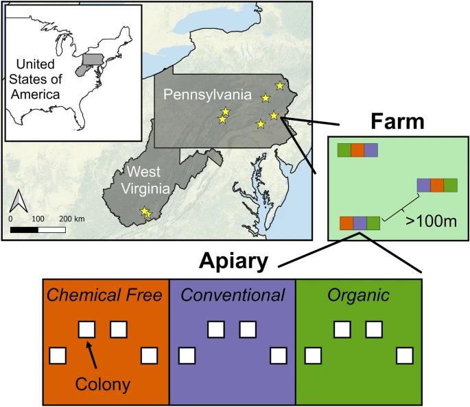
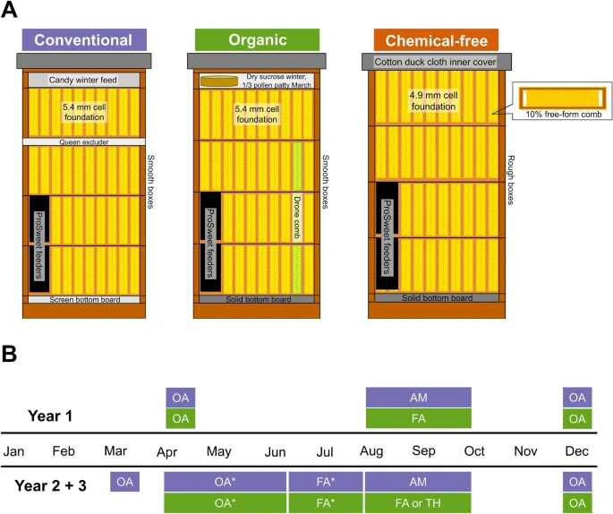
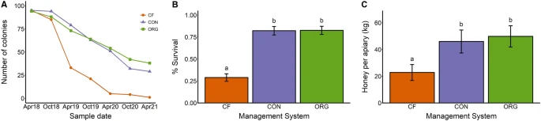
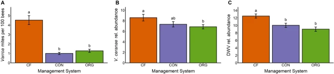
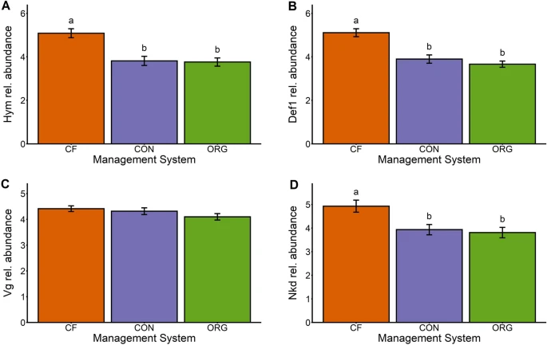
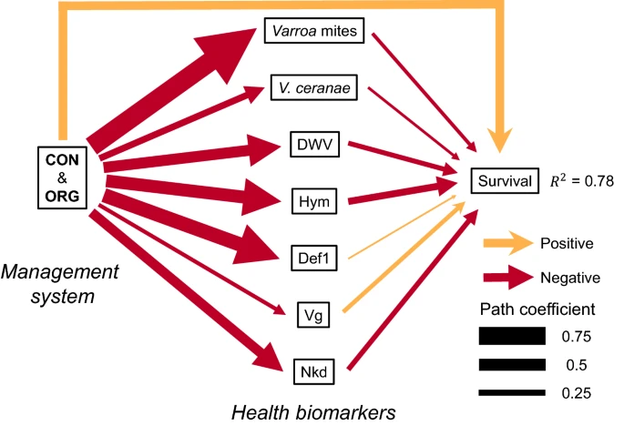

Robyn M. Underwood, Brooke L. Lawrence, Nash E. Turley, Lizzette D. Cambron-Kopco, Parry M. Kietzman, Brenna E. Traver & Margarita M. López-Uribe
Tłumaczenie R.Styczynski z pomocą ChatGPT. Źródło: https://www.nature.com/articles/s41598-023-32824-w
Abstrakt
Zarządzanie koloniami pszczół miodnych odgrywa kluczową rolę w łagodzeniu negatywnych skutków czynników biotycznych i abiotycznych. Istnieje jednak znaczna różnorodność praktyk stosowanych przez pszczelarzy, co skutkuje różnymi systemami zarządzania. W tym długoterminowym badaniu zastosowano podejście systemowe, aby eksperymentalnie zbadać rolę trzech reprezentatywnych systemów zarządzania pszczelarstwem (konwencjonalnego, organicznego i wolnego od chemikaliów) w kontekście zdrowia i produktywności stacjonarnych kolonii produkujących miód przez 3 lata.
Stwierdzono, że wskaźniki przeżycia kolonii w systemach zarządzania konwencjonalnym i organicznym były równoważne, ale około 2,8 razy wyższe niż w systemie wolnym od chemikaliów. Produkcja miodu była również podobna, przy czym w systemach zarządzania konwencjonalnym i organicznym produkcja miodu była odpowiednio o 102% i 119% większa niż w systemie wolnym od chemikaliów.
Raportujemy także znaczące różnice w biomarkerach zdrowia, w tym poziomach patogenów (DWV, IAPV, Vairimorpha apis, Vairimorpha ceranae) oraz ekspresji genów (def-1, hym, nkd, vg). Nasze wyniki eksperymentalnie wykazują, że praktyki zarządzania pszczelarstwem są kluczowymi czynnikami wpływającymi na przeżywalność i produktywność zarządzanych kolonii pszczół miodnych.
Co ważniejsze, odkryliśmy, że system zarządzania organicznego—stosujący dopuszczone do użytku organicznego chemikalia do zwalczania roztoczy—wspiera zdrowe i produktywne kolonie i może być włączony jako zrównoważone podejście dla stacjonarnych operacji pszczelarskich produkujących miód.
Wstęp
Kolonie pszczoły miodnej zachodniej, Apis mellifera, napotykają liczne wyzwania, które mogą wpływać na ich przeżywalność i produktywność1,2. Te wyzwania wynikają z czynników biotycznych i abiotycznych, takich jak szkodniki i patogeny, niedobory żywieniowe, ekspozycja na pestycydy oraz niestabilność klimatyczna3. Zarządzanie pasieką jest kluczowym aspektem zdrowia pszczół miodnych, ponieważ może pomóc w łagodzeniu niektórych negatywnych skutków wynikających z tych czynników. Na przykład niska różnorodność pożywienia dostępnego wokół kolonii może być kompensowana poprzez wysokiej jakości suplementację żywieniową4,5, a szkodniki, takie jak roztocza Varroa, mogą być kontrolowane za pomocą praktyk kulturowych, mechanicznych i chemicznych6,7. Dzięki optymalnym praktykom zarządzania pasieką pszczelarze mogą w dużej mierze utrzymać zdrowe i produktywne kolonie pszczół miodnych, które nadają się do zrównoważonej gospodarki pasiecznej8,9. Mimo to, coroczne straty kolonii wciąż są wyższe od historycznej średniej (~15%) w Stanach Zjednoczonych, a pszczelarze na całym świecie nadal poszukują porad dotyczących najlepszych praktyk zarządzania, aby utrzymać zdrowe i produktywne kolonie10,11,12,13.
Jednym z głównych wyzwań, z którymi pszczelarze muszą się zmierzyć przy wdrażaniu różnych praktyk pszczelarskich, jest to, że decyzje zarządcze są ograniczone wielkością pasieki oraz filozofią pszczelarza w stosunku do stosowania środków chemicznych14,15. Na przykład czasochłonne praktyki, takie jak miesięczne szacowanie populacji roztoczy w celu określenia potrzeb leczenia, są najczęściej stosowane przez małe pasieki hobbystyczne, ale nie są wykonalne w przypadku dużych, wędrownych pasiek (powyżej 500 kolonii)15,16. Ograniczenia te prowadzą do podobnych praktyk zarządzania wśród dużych pszczelarzy, podczas gdy małe pasieki różnią się znacznie pod względem stosowanych praktyk17. W szczególności pszczelarze zarządzający małymi pasiekami znacznie różnią się w gotowości do interwencji w kolonii i stosowania chemikaliów w celu zwalczania szkodników15. Te podstawowe różnice w skali działalności i gotowości do stosowania chemikaliów w koloniach (zwane dalej filozofią pszczelarską) są ważnymi determinantami praktyk zarządzania, które pszczelarze wybierają w swoich pasiekach, a w konsekwencji zdrowia i przeżywalności ich kolonii17.
Pomimo różnic w praktykach zarządzania pszczelarzy można podzielić na trzy szerokie kategorie systemów zarządzania w oparciu o ich filozofię pszczelarską15,18 (Tabela 1). Zarządzanie konwencjonalne opiera się na częstych interwencjach i stosowaniu wszelkich dostępnych chemikaliów oraz suplementów żywieniowych w celu utrzymania kolonii przy życiu. System ten jest często stosowany przez dużych komercyjnych pszczelarzy i obejmuje stosowanie syntetycznych chemikaliów oraz antybiotyków w celu zwalczania szkodników i chorób. W przeciwieństwie do tego zarządzanie organiczne opiera się na interwencji tylko w razie potrzeby i wyklucza stosowanie syntetycznych chemikaliów lub antybiotyków w koloniach. System ten jest powszechny wśród pszczelarzy małej i średniej skali (tzw. pszczelarzy bocznych) i opiera się na zintegrowanym podejściu do zwalczania szkodników, które łączy praktyki kulturowe z dopuszczonymi do stosowania organicznego środkami chemicznymi (np. kwas mrówkowy, kwas szczawiowy, tymol)19,20. Ostatni, system wolny od chemikaliów, jest popularny wśród hobbystów i charakteryzuje się brakiem aplikacji chemicznych oraz minimalną częstotliwością interwencji w kolonii15. System ten opiera się wyłącznie na praktykach kulturowych w zwalczaniu szkodników (np. komórki małych rozmiarów) oraz naturalnych obronach pszczół przed patogenami21.
| Cechy | Konwencjonalne | Organiczne | Wolne od chemikaliów |
|---|---|---|---|
Stosowanie syntetycznych chemikaliów |
Tak |
Nie |
Nie |
Stosowanie łagodnych chemikaliów |
Tak |
Tak |
Nie |
Stosowanie kontroli kulturowych |
Tak |
Tak |
Tak |
Częstotliwość interwencji |
Wysoka |
W razie potrzeby |
Niska |
Zaangażowanie czasowe na kolonię |
Niskie |
Średnie |
Niskie |
Jedną z motywacji, jakie mają pszczelarze stosujący system wolny od chemikaliów do unikania stosowania środków chemicznych w zwalczaniu szkodników i patogenów, jest to, że związki te mogą powodować kompromisy między korzyściami wynikającymi z redukcji szkodników a ryzykiem negatywnych skutków ubocznych23,24,25. Na przykład, choć niektóre syntetyczne chemikalia są bardzo skuteczne w zwalczaniu roztoczy Varroa, mogą mieć negatywne skutki dla kondycji pszczół miodnych, ponieważ obniżają żywotność plemników, zmieniają odpowiedzi metaboliczne, funkcję serca i tolerancję na wirusy26,27,28,29. Jednakże ograniczeniem badań eksperymentalnych nad wpływem akarycydów na zdrowie pszczół miodnych jest to, że w większości koncentrują się one na pojedynczym leczeniu. Jest to sprzeczne z rzeczywistością zarządzania pasieką, gdzie wielorakie wyniki ryzyka i korzyści wynikające z zastosowania akarycydów występują w kontekście wielu innych decyzji zarządczych związanych z pszczelarstwem15. Dlatego konieczne są eksperymenty wykorzystujące podejście systemowe, aby lepiej zrozumieć kompromisy między ryzykiem a korzyściami stosowania środków chemicznych. Mimo to większość badań w literaturze dotyczyła wpływu jednego lub dwóch aspektów zarządzania jednocześnie.
Innym ważnym ograniczeniem istniejącej literatury jest niedostatek badań mających na celu zidentyfikowanie długoterminowych efektów różnych praktyk zarządzania na zdrowie pszczół miodnych. Większość badań bada wpływ praktyk pszczelarskich na przeżywalność kolonii po pierwszym roku lub śledzi pasieki przez kilka lat, nawet gdy kolonie są wymieniane z powodu śmiertelności, zamiast śledzić indywidualne kolonie w sposób ciągły9,30,31. Kolonie pierwszoroczne rozwijające się na gołym węzie różnią się od starszych, wieloletnich kolonii, co przekłada się na różne wyzwania zdrowotne i zyski ekonomiczne. Na przykład budowa plastra wosku jest bardzo kosztowna energetycznie, co ogranicza ilość miodu możliwego do zebrania32. Ponadto, z epidemiologicznego punktu widzenia, starsze kolonie są bardziej podatne na akumulację szkodników i chorób oraz prawdopodobnie wymagają innych praktyk zarządzania niż kolonie pierwszoroczne33. W związku z tym istnieje potrzeba badań długoterminowych, które śledzą indywidualne kolonie przez kilka lat, aby określić, czy zdrowie i produktywność kolonii reagują inaczej na zarządzanie w czasie.
Nasza zdolność do charakteryzowania i ilościowego określania zdrowia kolonii jest kluczowa dla przewidywania przeżywalności pszczół miodnych i produktywności kolonii. Dlatego stosowanie standardowych biomarkerów do oceny zdrowia kolonii pszczół miodnych w badaniach długoterminowych nad praktykami zarządzania pasiekami może ułatwić walidację biomarkerów zdrowia, które mogą wskazywać na spadek siły, stan odżywienia lub stres34. Niektóre z najczęściej stosowanych biomarkerów zdrowia pszczół miodnych obejmują poziomy infestacji roztoczami Varroa35, miana wirusów36 oraz ekspresję genów odpornościowych37, które mogą być silnymi predyktorami sukcesu zimowania kolonii. Podczas gdy roztocza Varroa można łatwo dostrzec i monitorować, poziomy wirusów wymagają zaawansowanych metod laboratoryjnych i sprzętu38. W związku z tym prowadzenie badań terenowych, które łączą dane terenowe i laboratoryjne, jest niezbędne dla dostarczenia wyników eksperymentalnych istotnych dla pszczelarzy.
Celem tego badania było eksperymentalne przetestowanie wyników trzech systemów zarządzania (konwencjonalnego, organicznego i wolnego od chemikaliów; Tabela 1) na zdrowie i produktywność kolonii pszczół miodnych przez 3 lata. Nasze podejście koncentrowało się na ocenie kilku biomarkerów zdrowia, w tym poziomów pasożytniczych roztoczy (Varroa destructor), patogenów (Vairimorpha ceranae [wcześniej znany jako Nosema ceranae], V. apis [wcześniej znany jako N. apis], wirusa zdeformowanych skrzydeł (DWV) i izraelskiego wirusa ostrego paraliżu (IAPV)) oraz ekspresji kilku genów związanych z funkcją odpornościową i metabolizmem (defensin-1, hymenoptaecin, gen nagiej kutykuli i vitellogenin). Użyliśmy mian patogenów i poziomów ekspresji genów odpornościowych jako biomarkerów zdrowia do przewidywania przeżywalności.
Postawiliśmy hipotezę, że system zarządzania organicznego zapewni koloniom największe korzyści poprzez kompromisy między kontrolą szkodników i patogenów a unikaniem narażenia na syntetyczne chemikalia. Nasze wyniki wskazują, że kolonie w systemach zarządzania konwencjonalnym i organicznym wykazują podobną przeżywalność i produkcję miodu, dostarczając dowodów na to, że zarządzane kolonie pszczół miodnych wymagają aktywnego zarządzania szkodnikami, ale nie regularnego stosowania syntetycznych chemikaliów, aby były zrównoważone.
Materiały i metody
Opracowanie protokołów dla systemów zarządzania
Protokoły użyte w tym badaniu do eksperymentalnego testowania różnic między trzema systemami zarządzania pasiekami zostały opracowane w ramach nauki partycypacyjnej z grupą interesariuszy. Spotkaliśmy się z 30 pszczelarzami reprezentującymi systemy zarządzania konwencjonalne, organiczne i wolne od chemikaliów, aby opracować szczegółowe protokoły użyte w tym eksperymencie (Tabela 1, Dodatek 1). Protokoły obejmowały różnice w źródłach pakietów pszczół, rodzaju wyposażenia, rodzaju i częstotliwości zabiegów przeciwko szkodnikom i patogenom, a także rodzaju i częstotliwości karmienia.
Projekt eksperymentu
Założyliśmy 288 kolonii pszczół miodnych na ośmiu certyfikowanych ekologicznych farmach: sześć w Pensylwanii (PA) i dwie w Wirginii Zachodniej (WV), USA (Rys. 1). Kolonie były monitorowane od kwietnia 2018 do kwietnia 2021 w PA i od kwietnia 2018 do kwietnia 2020 w WV. Każda z 8 farm miała trzy pasieki (bloki), które były oddalone od siebie co najmniej 100 m (min = 130, maks = 8500, mediana = 1080, średnia = 2080, SD = 2400) i zawierały kolonie wszystkich trzech systemów zarządzania (4 kolonie na leczenie), co dawało łącznie 36 kolonii na farmę. Każda pasieka była otoczona elektrycznym ogrodzeniem w celu ochrony przed niedźwiedziami. Kolonie każdego systemu zarządzania były grupowane razem w obrębie każdej pasieki, ale ich rozmieszczenie było losowe w różnych pasiekach (Rys. 1).
Rysunek 1.

Lokalizacje geograficzne i rozmieszczenie przestrzenne farm, pasiek i kolonii
Żółte gwiazdy reprezentują lokalizacje różnych farm. Każda farma zawierała trzy pasieki oddalone od siebie o co najmniej 100 m, w których znajdowało się łącznie 12 kolonii, po 4 w każdym systemie zarządzania. Rozmieszczenie przestrzenne różnych systemów zarządzania zostało losowo przypisane do poszczególnych pasiek.
Zakładanie kolonii i wymiana matek
Pod koniec kwietnia 2018 roku założyliśmy kolonie z 1,5 kg pszczół pakietowych z unasienionymi matkami zakupionych od dwóch producentów w Georgii, USA. Pakiety dla systemów zarządzania konwencjonalnego i organicznego zostały zakupione od Roberts Bee Co., a pakiety dla systemu wolnego od chemikaliów od Dixie Bee Supply, ponieważ dostawca używał plastrów o małych komórkach i zarządzał koloniami organicznie. Pszczoły z pakietów były używane jako budownicze plastrów przed wymianą matek i ujednoliceniem tła genetycznego kolonii (szczegóły poniżej). Pszczoły pakietowe zostały osiedlone w standardowym sprzęcie Langstrotha na 10 ramek o średniej wysokości z niedocelowaną plastikową węzą we wszystkich systemach zarządzania.
Dla systemów zarządzania konwencjonalnego i organicznego węza była zakupiona z standardowymi sześciokątnymi wrażeniami o rozmiarze 5,2 mm i lekkim woskowym pokryciem. Dla systemu wolnego od chemikaliów zakupiono plastikowe ramki z małymi sześciokątnymi wrażeniami o rozmiarze 4,9 mm bez woskowego pokrycia. Plastikowe ramki zostały przycięte i przymocowane do standardowych drewnianych ramek, pozostawiając 2,5 cm otwartej przestrzeni z każdej strony węzy. Plastikowa węza została następnie pokryta woskiem pszczelim pochodzącym z kolonii utrzymywanych na pustyni w Arizonie, USA. Wosk ten był wolny od pestycydów, ponieważ został zebrany w obszarze bez bliskości chemikaliów rolniczych przez pszczelarza, który nie używa chemikaliów w ulach.
W lipcu 2018 roku wymieniliśmy matki we wszystkich koloniach badania na siostrzane matki hodowane i swobodnie unasieniane w pobliżu Utica, NY (USA). Matki zostały wyprodukowane poprzez przeszczepianie larw z kolonii, która nie była traktowana przeciwko roztoczom Varroa przez co najmniej 7 lat. Po założeniu i wymianie matek nie wprowadzono innych pszczół ani matek do badania.
Aby utrzymać gęstość kolonii na poziomie 12 na pasiekę, tworzyliśmy odkłady z ocalałych kolonii i umieszczaliśmy je w pustych przestrzeniach. Kolonie te były utrzymywane zgodnie z systemem zarządzania ich pochodzenia. W pasiekach, gdzie śmiertelność w systemie wolnym od chemikaliów była bardzo wysoka i odkłady nie mogły zrekompensować różnicy, przestrzenie te wypełniano koloniami z systemów zarządzania organicznego lub konwencjonalnego. Te kolonie zastępcze były monitorowane i zarządzane zgodnie z naszymi protokołami, ale nie były uwzględniane w analizach ani wynikach przedstawionych w badaniu. Do naszego zbioru danych włączono tylko kolonie, które przetrwały ciągle.
Szczegóły zarządzania
Systemy zarządzania różniły się pod względem wyposażenia, zabiegów chemicznych przeciwko pasożytniczym roztoczom oraz zimowego karmienia (Tabela 1, Rys. 2, Dodatek 1). W skrócie:
-
Kolonie w systemie zarządzania konwencjonalnego miały wentylowane dennice, kratę odgrodową między trzecim korpusem średnim a miodniami, były traktowane każdej jesieni amitrazą (ApiVar, Veto-Pharma) i otrzymywały deski z pokarmem zawierającym 3% białka jako awaryjne zimowe karmienie.
-
Kolonie w systemie zarządzania organicznego miały pełne dennice, nie miały krat odgrodowych, były traktowane chemikaliami dopuszczonymi do użytku organicznego9,22 w rotacji, stosowano usuwanie czerwiu trutowego, a jako awaryjne zimowe karmienie podawano im granulowany cukier.
-
Kolonie zarządzane w systemie wolnym od chemikaliów miały pełne dennice, wewnętrzne pokrywy z bawełnianego płótna, nie miały krat odgrodowych, nigdy nie były traktowane przeciwko roztoczom i nie otrzymywały awaryjnego zimowego karmienia (granulowany cukier), chyba że głód był nieuchronny.
Awaryjne zimowe karmienie w systemach organicznym i konwencjonalnym było zapewniane w styczniu każdej zimy, ale w systemie wolnym od chemikaliów tylko w razie potrzeby.
Rysunek 2.

Szczegóły wyposażenia i zastosowania zabiegów dla każdego systemu zarządzania
(A) Rysunek przedstawia przekrój każdego systemu i pokazuje wyposażenie używane w każdym systemie zarządzania.
(B) Oś czasu zabiegów pokazuje różne rodzaje zastosowanych zabiegów, w tym kryształki kwasu szczawiowego (OA), amitrazę (AM), kwas mrówkowy (FA) lub tymol (TH), podczas pierwszego roku (góra) oraz lat 2 i 3 (dół) dla systemu konwencjonalnego (niebieski), organicznego (zielony) i wolnego od chemikaliów (pomarańczowy).
Szczegóły zarządzania znajdują się w Tabeli 1 i Dodatku 1. Gwiazdki (*) wskazują, że zabieg był stosowany tylko wtedy, gdy osiągnięto próg 1%.
Przeżywalność kolonii w zimie i produkcja miodu
Kolonie były kontrolowane co 2 tygodnie od marca do października w latach 2018 i 2019 oraz co 3 tygodnie w 2020 roku z powodu ograniczeń w podróżach związanych z pandemią COVID-19. Kolonie były również odwiedzane co miesiąc w zimnych miesiącach, od listopada do lutego. Przeżywalność wszystkich pierwotnych kolonii była rejestrowana przez cały okres trwania badania. Ponieważ największa liczba strat kolonii występuje zimą, straty letnie nie były uwzględniane w analizach danych.
Przeżywalność zimowa była oceniana na podstawie liczby kolonii, które przetrwały od października do kwietnia następnego roku. Aby określić produkcję miodu w każdej pasiece, oznaczone miodnie były indywidualnie ważone przed i po ekstrakcji miodu, aby określić ilość miodu wyprodukowanego przez każdą kolonię w każdym roku badania. Dane dotyczące produkcji miodu były łączone dla kolonii tego samego systemu zarządzania w każdej pasiece do celów analizy danych.
Szkodniki i patogeny
Każdego roku w październiku ilościowo określaliśmy liczebność kluczowych patogenów pszczół miodnych, które mają istotny wpływ na zdrowie kolonii, w tym roztoczy Varroa, V. ceranae, V. apis (wcześniej Nosema ceranae i Nosema apis odpowiednio39), wirusa zdeformowanych skrzydeł (DWV) i izraelskiego wirusa ostrego paraliżu (IAPV).
Do ilościowego oznaczania roztoczy Varroa użyliśmy kąpieli alkoholowych około 300 pszczół, licząc liczbę roztoczy usuniętych z pszczół podczas tego procesu. Wszystkie inne patogeny były oznaczane za pomocą ilościowego odwrotnej transkrypcji PCR (qRT-PCR) z użyciem wcześniej opracowanych sekwencji starterów (Tabela S1).
Liczebność V. ceranae i V. apis była szacowana na podstawie DNA wyekstrahowanego metodą fenolowo-chloroformową z 30 odwłoków robotnic w pulach po pięć odwłoków, co dawało łącznie sześć prób kompozytowych na kolonię w każdym okresie próbkowania. qRT-PCR przeprowadzano zgodnie z wcześniej opisanymi metodami40, aby określić poziomy infekcji każdego z patogenów.
Wirusy RNA DWV i IAPV były oznaczane z odwłoków innej puli 30 pszczół na kolonię. Tkanki homogenizowano w buforze Chaos, a RNA ekstrahowano za pomocą zestawu Zymo Quick-RNA Microprep Kit zgodnie z protokołem producenta. cDNA syntetyzowano z 2 µg RNA przy użyciu losowych starterów i MultiScribe RT, zgodnie z protokołem producenta (Applied Biosystems, Foster City, CA).
Reakcje qRT-PCR przeprowadzano na 384-dołkowych płytach za pomocą systemu QuantStudio 5 Real-Time PCR System (Applied Biosystems). Każdy dołek zawierał 5 µl PowerUp™ SYBR™ Green Master Mix (Applied Biosciences, Thermofisher Scientific, Waltham, MA), 0,25 µl każdego z primerów (10 µM), 2,5 µl wody wolnej od nukleaz i 40 ng matrycy cDNA. Reakcje przeprowadzano w następujących warunkach: 60 s w 95 °C na początkową denaturację, następnie 40 cykli po 15 s w 95 °C na denaturację i 30 s w 60 °C na przyłączanie starterów i elongację.
Po zbieraniu danych przeprowadzano analizę krzywej topnienia przez 15 s w 95 °C, 60 s w 60 °C i 1 s w 95 °C, aby określić specyficzność produktów amplifikacji. Wszystkie reakcje wykonywano w trzech powtórzeniach technicznych, a każda płyta zawierała negatywne kontrole wody wolnej od nukleaz dla każdego zestawu primerów. Wartość Ct dla każdej próbki była określana jako średnia z trzech powtórzeń technicznych. Wszelkie powtórzenia techniczne, które podnosiły odchylenie standardowe trzech powtórzeń powyżej 1, były usuwane. Wartość graniczna dla mierzalnej ekspresji wynosiła Ct na poziomie 35 lub wyższym.
Od wartości Ct genu referencyjnego odejmowano wartość Ct genów docelowych, aby wygenerować wartości ΔCt dla każdej próbki. Próbka o najwyższej wartości ΔCt dla każdego wirusa była używana jako baza do obliczenia wartości ΔΔCt41. Metoda ΔΔCt była stosowana do ilościowego oznaczania wirusów, aby ułatwić transformację danych i spełnić założenia normalności do dalszej analizy danych.
Ekspresja genów
Zmierzyliśmy ekspresję czterech genów jako biomarkerów zdrowia pszczół miodnych34,36,37,42. Gen vitellogenin (vg) został wybrany, ponieważ wyższe poziomy jego ekspresji zostały zidentyfikowane jako biomarker sukcesu zimowania kolonii A. mellifera37. Geny kodujące peptydy antybakteryjne hymenoptaecin (hym) i defensin-1 (def1) zostały wybrane jako wskaźniki odpowiedzi immunologicznej na infekcje36, a gen naked cuticle (nkd) został użyty do ilościowego oznaczania funkcji regulacji immunologicznej szlaku Wnt42. Gen nkd reguluje w dół szlak Wnt i został zaproponowany jako biomarker obniżonej odpowiedzi immunologicznej związanej z wyższymi mianami wirusów u A. mellifera42. Ekspresję genów mierzono na podstawie tych samych ekstrakcji RNA i protokołu qRT-PCR, co w przypadku patogenów wirusowych.
Analiza statystyczna
Aby zbadać wpływ systemu zarządzania na zdrowie kolonii, uśredniliśmy dane w latach i koloniach w obrębie każdej pasieki, uzyskując jedną wartość na leczenie na pasiekę, co dało 72 punkty danych (24 pasieki × 3 systemy zarządzania). W przypadku produkcji miodu obliczyliśmy sumę całkowitej produkcji dla każdej pasieki, ponieważ ta wartość odzwierciedla całkowitą produkcję miodu na pasiekę.
Przekształciliśmy zmienne qPCR (Vairimorpha spp., DWV, IAPV, hym, def1, vg, nkd) poprzez logarytmowanie lub logarytmowanie + 1, ponieważ były one silnie skośne w lewo i zawierały niewielką liczbę bardzo dużych wartości. Vairimorpha apis i IAPV zostały wykluczone z analiz z powodu dużej liczby zerowych wartości w tych zmiennych. Nie przekształcaliśmy liczby roztoczy Varroa, aby ułatwić interpretację wyników, a wyniki analiz były podobne dla danych surowych i przekształconych logarytmicznie.
Użyliśmy liniowych modeli z efektami mieszanymi, korzystając z funkcji lmer w pakiecie lme4, aby ilościowo określić wpływ systemu zarządzania na wszystkie zmienne odpowiedzi, używając „farmy” (czynnik z 8 poziomami) jako efektu losowego [składnia modelu: lmer(y ~ system zarządzania + (1|farma))43]. Aby zbadać wpływ systemu zarządzania, roku i ich interakcji, uwzględniliśmy zmienną ciągłą dla „roku”, aby uwzględnić pomiary powtarzalne, oraz „farmę” jako efekt losowy [składnia modelu: lmer(y ~ system zarządzania * rok + (rok|farma))].
Obliczyliśmy wartości p z modeli za pomocą funkcji Anova w pakiecie car44, stosując sumy kwadratów typu 3 i statystyki F obliczone przy użyciu aproksymacji Kenwarda-Rogera stopni swobody. Aby zidentyfikować różnice między systemami zarządzania, przeprowadziliśmy testy post-hoc Tukey HSD za pomocą funkcji emmeans w pakiecie emmeans45.
Oszacowaliśmy wielkości efektów dla leczenia organicznego i konwencjonalnego w porównaniu do systemu wolnego od chemikaliów jako kontroli, obliczając: (leczenie − kontrola) / kontrola * 100.
Ostatecznie użyliśmy analiz ścieżkowych do oszacowania wpływu systemów zarządzania na biomarkery zdrowia (szkodniki, patogeny i ekspresja genów) oraz przeżywalność kolonii, korzystając z funkcji sem w pakiecie lavaan46. Aby znormalizować i standaryzować dane, przekształciliśmy wszystkie zmienne, z wyjątkiem przeżywalności, i przeskalowaliśmy je [średnia = 0; odchylenie standardowe = 1]. Następnie stworzyliśmy kontrast dla systemu zarządzania, który porównywał leczenie organiczne (ORG) i konwencjonalne (CON) do systemu wolnego od chemikaliów (CF), ponieważ ten kontrast wyjaśniał największą zmienność, a leczenie ORG i CON miały bardzo podobne wyniki. Aby zobaczyć, jak relacje zmieniały się w czasie trwania badania, dopasowaliśmy analizę ścieżkową oddzielnie dla 2018 roku (rok 1) i lat 2019–2020 (lata 2 i 3). Połączyliśmy dane z 2019 i 2020 roku z powodu znacznie zmniejszonej liczby punktów danych w 2020 roku.
Wyniki
Przeżywalność kolonii i produkcja miodu
Kolonie zarządzane w systemie wolnym od chemikaliów wykazały zmniejszoną przeżywalność i produkcję miodu w porównaniu z koloniami zarządzanymi w systemach organicznym i konwencjonalnym. Na początku badania było 96 kolonii w każdym systemie zarządzania, a po 3 latach przetrwała tylko 1 kolonia w systemie wolnym od chemikaliów, podczas gdy w systemach konwencjonalnym i organicznym przeżyło odpowiednio 29 i 38 kolonii (Rys. 3A).
Systemy zarządzania organicznego i konwencjonalnego zwiększyły przeżywalność o ponad 180% w porównaniu z systemem wolnym od chemikaliów (Tabela 2, Rys. 3B). Systemy zarządzania organicznego i konwencjonalnego również zwiększyły całkowitą produkcję miodu w ciągu 3 lat, przy czym system organiczny zwiększył produkcję o 118%, a konwencjonalny o 102% (Tabela 2, Rys. 3C).
Wpływ systemu zarządzania na produkcję miodu różnił się w zależności od roku (Tabela S3), przy czym w pierwszym roku nie odnotowano istotnych różnic między systemami, a system wolny od chemikaliów produkował mniej miodu w latach 2 i 3 (Rys. S2). Systemy zarządzania organicznego i konwencjonalnego nie różniły się pod względem przeżywalności ani produkcji miodu (Tabela S2, Rys. 2).
Rysunek 3.

Podsumowanie wpływu systemu zarządzania na:
(A) Liczbę kolonii, (B) Przeżywalność zimową, oraz © Produkcję miodu na pasiekę w ciągu trzech lat eksperymentu.
Trzy testowane systemy zarządzania to: wolny od chemikaliów (CF, pomarańczowy), konwencjonalny (CON, niebieski) i organiczny (ORG, zielony). Kolumny z różnymi literami różnią się od siebie istotnie (test post-hoc Tukey HSD, wartość p < 0,05). Liczba kolonii po kwietniu 2020 roku nie obejmuje kolonii z pasiek w Wirginii Zachodniej.
| Zmienna | F | p |
|---|---|---|
Przeżywalność |
57.57 |
< 0.0001 |
Produkcja miodu |
5.52 |
0.006 |
Roztocza Varroa |
52.76 |
< 0.0001 |
Vairimorpha ceranae |
4.05 |
0.022 |
DWV |
15.16 |
< 0.001 |
def1 |
28.40 |
< 0.001 |
hym |
22.13 |
< 0.001 |
nkd |
8.52 |
0.001 |
vg |
2.17 |
0.122 |
Farma została użyta jako efekt losowy. Stopnie swobody dla wszystkich testów to ndf = 2 i ddf = 62.
Pasożyty i patogeny
Systemy zarządzania organicznego i konwencjonalnego zmniejszyły poziomy roztoczy Varroa, V. ceranae i DWV. Roztocza Varroa wykryto w 92% kolonii, ale systemy organiczne i konwencjonalne zmniejszyły ich liczebność odpowiednio o 72% i 78% w porównaniu do systemu wolnego od chemikaliów (Tabela 2; Rys. 4A). Stwierdziliśmy istotną interakcję między systemem zarządzania a rokiem z powodu wzrostu liczby roztoczy Varroa w czasie (Tabela S3, Rys. S2). Szczególnie kolonie zarządzane w systemie wolnym od chemikaliów wykazały najwyższe poziomy roztoczy Varroa w ciągu 3 lat badania, z średnią 4,5 roztoczy na 100 pszczół (Rys. S4).
Vairimorpha ceranae wykryto w 98% kolonii. Stwierdziliśmy umiarkowane dowody, że system zarządzania organicznego zmniejszył poziomy V. ceranae o 20% (test post-hoc Tukey HSD, wartość p = 0.02; Rys. 4B) i słabe dowody, że system zarządzania konwencjonalnego zmniejszył poziomy o 15% (test post-hoc Tukey HSD, wartość p = 0.12; Rys. 4B). Jednak te efekty nie były istotne, gdy rok został uwzględniony jako efekt stały w modelu (Tabela S3, Rys. S2).
Wirus zdeformowanych skrzydeł (DWV) był pod wpływem systemu zarządzania (Tabela 2), przy czym leczenie organiczne i konwencjonalne zmniejszyły względną obfitość DWV o odpowiednio 28% i 20% (Rys. 4C).
Vairimorpha apis wykryto tylko w 26% kolonii, a system zarządzania nie miał wpływu na jej względną obfitość (F2,62 = 0.27, wartość p = 0.76), dlatego nie została uwzględniona w innych analizach.
Rysunek 4.

Podsumowanie różnic w:
(A) liczbie roztoczy Varroa na 100 pszczół, (B) względnej obfitości V. ceranae, oraz © względnej obfitości DWV w koloniach poddanych trzem systemom zarządzania.
Trzy testowane systemy zarządzania to: wolny od chemikaliów (CF, pomarańczowy), konwencjonalny (CON, niebieski) i organiczny (ORG, zielony). Kolumny z różnymi literami różnią się od siebie istotnie (test post-hoc Tukey HSD, wartość p < 0.05). ---
Ekspresja genów
Ekspresja genów hym, def1 i nkd, ale nie vg, różniła się w zależności od systemu zarządzania. Systemy zarządzania organicznego i konwencjonalnego zmniejszyły ekspresję hym, def1 i nkd o 20–28% w porównaniu do systemu wolnego od chemikaliów (Tabela 2, Rys. 4A, B, D). We wszystkich przypadkach nie stwierdzono istotnych różnic między leczeniem organicznym a konwencjonalnym (Tabela S2, Rys. 5).
Ekspresja vg nie była jednak wpływana przez system zarządzania (Tabela 2, Rys. 5C). Poziomy ekspresji różniły się w poszczególnych latach (Rys. S3), ale nie wykryto istotnej interakcji między systemem zarządzania a rokiem (Tabela S3).
Rysunek 5.

Podsumowanie różnic w ekspresji genów:
(A) Hymenoptaecin (hym), (B) Defensin-1 (def1), © Vitellogenin (vg), oraz (D) Naked cuticle gene (nkd) w koloniach poddanych trzem testowanym systemom zarządzania: wolny od chemikaliów (CF, pomarańczowy), konwencjonalny (CON, niebieski) i organiczny (ORG, zielony).
Kolumny z różnymi literami różnią się od siebie istotnie (test post-hoc Tukey HSD, wartość p < 0.05).
Predyktory przeżywalności zimowej
Zmienne uwzględnione w analizie ścieżkowej wyjaśniły 78% zmienności w przeżywalności kolonii w okresie zimowym (Rys. 6). Najsilniejszym pojedynczym predyktorem przeżywalności był bezpośredni wpływ systemu zarządzania (r = 0.36), przy czym systemy zarządzania organicznego i konwencjonalnego były związane z wyższą przeżywalnością kolonii w porównaniu do systemu wolnego od chemikaliów.
Szkodniki i patogeny pszczół miodnych (Varroa, V. ceranae i DWV) były negatywnie związane z przeżywalnością, przy czym DWV miał największy wpływ (r = −0.2), V. ceranae najmniejszy (r = −0.1), a Varroa miały wartość pośrednią (r = −0.15). Wzrost ekspresji genów hym (r = −0.29) i nkd (r = −0.21) również wiązał się z obniżeniem przeżywalności. W przeciwieństwie do tego, vg był pozytywnie związany z przeżywalnością (r = 0.18). Def1 miał słaby, nieistotny związek z przeżywalnością.
Wpływ systemu zarządzania na przeżywalność, mediowany przez biomarkery zdrowia, potwierdza, że systemy zarządzania organicznego i konwencjonalnego są związane z mniejszą liczbą szkodników i patogenów oraz obniżoną ekspresją genów odpornościowych. Wpływ systemu zarządzania na Varroa był największy (r = −0.81), podczas gdy wpływ na vg i V. ceranae był najsłabszy, a inne zmienne miały wartości pośrednie.
Pomimo spójności głównych bezpośrednich efektów zarządzania na przeżywalność kolonii, analiza ścieżkowa dla pierwszego roku badania (2018) wykazała silniejsze efekty zmiennych kolonii na przeżywalność podczas zimy 2018–2019 niż na przeżywalność podczas zim 2019–2020 i 2020–2021 (Rys. S5).
Rysunek 6.

Analiza ścieżkowa: Wpływ systemu zarządzania na biomarkery zdrowia i przeżywalność zimową kolonii pszczół miodnych
Analiza ścieżkowa ilustruje wpływ systemu zarządzania (lewa strona) na biomarkery zdrowia (środek) oraz ich wpływ na zimową przeżywalność kolonii pszczół miodnych (prawa strona). Negatywne ścieżki wychodzące z pola „CON & ORG” wskazują, że systemy zarządzania konwencjonalnego i organicznego obniżyły poziomy zmiennych w porównaniu do systemu wolnego od chemikaliów.
Dane użyte w modelu traktowały pasieki jako powtórzenia (N = 72) i były uśrednione w ciągu 3 lat badania. Kolory wskazują efekty pozytywne (pomarańczowy) i negatywne (czerwony). Szerokość strzałek jest skalowana współczynnikami ścieżek (od 0 do 1) i wskazuje siłę zależności, która waha się od niskiej (cienka) do wysokiej (gruba). Strzałka łącząca system zarządzania i przeżywalność pokazuje bezpośredni efekt, który nie jest wyjaśniony przez pośrednie biomarkery zdrowia.
Dyskusja
Nasze eksperymentalne badanie analizuje długoterminowe efekty trzech systemów zarządzania pasiekami (konwencjonalnego, organicznego i wolnego od chemikaliów) na przeżywalność i produktywność pszczół miodnych. Przy użyciu modelu obejmującego system zarządzania i siedem biomarkerów zdrowia udało nam się wyjaśnić 78% zmienności w przeżywalności kolonii. Wyniki te wskazują, że pomimo wielu biotycznych i abiotycznych czynników stresowych wpływających na pszczoły miodne3, zarządzanie pasieką jest najważniejszym czynnikiem związanym ze zdrowiem i produktywnością kolonii stacjonarnych produkujących miód.
Straty zimowe dla systemów zarządzania konwencjonalnego i organicznego wynosiły średnio 23% w ciągu 3 lat badania. Jest to wartość niższa niż raportowane przez pszczelarzy w Stanach Zjednoczonych, którzy zgłaszają średnio około 40% strat rocznie47. Wyniki tego badania podkreślają znaczenie wprowadzania zaleceń opartych na danych do operacji pszczelarskich, co pozostaje jednym z głównych wyzwań dla bardziej zrównoważonego przemysłu.
Pszczelarze stosujący system zarządzania wolny od chemikaliów sprzeciwiają się stosowaniu chemicznych zabiegów przeciw roztoczom i interwencjom w koloniach ze względu na potencjalne negatywne skutki tych zabiegów dla pszczół. Nasze wyniki pokazują jednak, że korzyści wynikające z zabiegów przeciwroztoczowych przewyższają ich negatywne skutki w operacjach produkcji miodu. Brak zabiegów przeciwroztoczowych prowadził do niezdrowych kolonii, które były pięć razy bardziej narażone na śmierć niż kolonie leczone przeciwko roztoczom.
Chociaż istnieją dowody na to, że populacje pszczół miodnych mogą przetrwać w warunkach niezarządzanych bez zabiegów przeciw Varroa48,49,50,51,52,53, nasze wyniki pokazują, że system wolny od chemikaliów nie nadaje się do operacji pszczelarskich produkujących miód. Kolonie w systemie wolnym od chemikaliów doświadczały śmiertelności na poziomie 70% rocznie, mimo stosowania matek z lokalnej kolonii, która nie była traktowana przeciw roztoczom przez 7 lat.
Wyniki te wskazują, że monitorowanie populacji roztoczy jest kluczowe dla przetrwania operacji produkujących miód, a zabiegi chemiczne są niezbędne, gdy poziomy roztoczy przekraczają próg 1–2%, aby uniknąć wysokiej śmiertelności kolonii w okresie zimowym54.
Kluczowe wnioski
Jednym z ważnych wyników tego badania jest wykazanie, że systemy zarządzania organicznego i konwencjonalnego porównywalnie wpływają na przeżywalność i produkcję miodu, co sugeruje, że system organiczny może być uważany za zrównoważone podejście do zarządzania małymi i średnimi stacjonarnymi operacjami produkującymi miód. Jest to pierwsze badanie, które eksperymentalnie przetestowało przydatność podejść organicznych w zarządzaniu koloniami pszczół miodnych.
Nasz system zarządzania organicznego opiera się na stosowaniu organicznych akarycydów na podstawie progów ilościowych, wśród innych praktyk15, które są zatwierdzone do stosowania w organicznym pszczelarstwie9,22. W przypadku roztoczy Varroa, kolonie w systemie konwencjonalnym wykazały najmniejszą liczbę roztoczy spośród wszystkich systemów, ale średnio poziomy roztoczy były poniżej progów (mniej niż 2 roztocza na 100 pszczół) zarówno w systemach konwencjonalnym, jak i organicznym (XCON = 1 roztocz na 100 pszczół; XORG = 1,28 roztocza na 100 pszczół; XCF = 4,52 roztocza na 100 pszczół; Tabela S2).
Z kolei najniższe poziomy V. ceranae odnotowano w koloniach zarządzanych w systemie organicznym (Tabela S2). Wyniki te sugerują, że system organiczny nie tylko jest odpowiedni dla zrównoważonego przemysłu pszczelarskiego, ale również, że stosowanie kryteriów progowych dla aplikacji organicznych akarycydów może mieć pozytywny wpływ na zdrowie kolonii.
Ważne jest jednak, aby zauważyć, że produkty tych kolonii nie mogą być sprzedawane jako organiczne, chyba że istnieje wystarczające organiczne siedlisko wspierające wyłączne zbieranie pyłku i nektaru wolnego od pestycydów22. Obecne zalecenia dotyczące organicznego pszczelarstwa w Stanach Zjednoczonych obejmują strefę wolną od pestycydów w promieniu 3 km oraz dodatkową strefę monitorowania w promieniu 3,4 km wokół pasieki. Przyszłe badania powinny zbadać wykonalność wspierania kolonii w siedliskach wolnych od pestycydów zlokalizowanych w mniejszych, wysokiej jakości certyfikowanych organicznych obszarach.
Biomarkery zdrowia i podejście systemowe
Zastosowanie kilku biomarkerów zdrowia w tym badaniu wskazuje, że hym, DWV, nkd i vg są odpowiednimi wskaźnikami zdrowia kolonii34. Jednakże, biorąc pod uwagę wszystkie zmienne, system zarządzania był najsilniejszym pojedynczym predyktorem przeżywalności (r = 0.36; Rys. 6), mimo że wiele zmiennych samo w sobie jest silnie skorelowanych z przeżywalnością (Rys. S4). Sugeruje to, że to zbiorczy efekt systemu zarządzania na wiele czynników jest kluczowym determinantem przeżywalności kolonii.
Po uwzględnieniu wpływu systemu zarządzania, poziomy roztoczy Varroa były słabym predyktorem przeżywalności kolonii55 (r = 0.15; Rys. 5). Jednakże, bez interwencji, liczba roztoczy w koloniach w systemie wolnym od chemikaliów dramatycznie wzrastała (Rys. S4) i była silnie związana z niższą przeżywalnością (Rys. S6). Kolonie, które przetrwały w systemie wolnym od chemikaliów, wykazywały wysokie poziomy roztoczy i wychowywały potomstwo w obecności dużych obciążeń roztoczami, co prawdopodobnie miało istotny wpływ na ich ogólny stan zdrowia i przeżywalność zimą36.
Odkryliśmy również zależności między poziomami roztoczy Varroa a innymi biomarkerami zdrowia, które ocenialiśmy (Rys. S6). Poziomy roztoczy były silnie dodatnio skorelowane z mianami wirusa DWV oraz ekspresją peptydów antybakteryjnych def-1 i hym (r > 0.65; Rys. S6). Rola roztoczy Varroa w zimowych stratach kolonii oraz w rozprzestrzenianiu i aktywacji wirusów jest dobrze udokumentowana1,56,57,58. Dlatego nie jest zaskakujące, że systemy zarządzania kontrolujące roztocza wykazują również znaczne zmniejszenie mian wirusów59,60.
Z kolei poziomy vg nie były zależne od systemu zarządzania, co jest zgodne z jego rolą jako biomarkera stanu odżywienia kolonii37. Poziomy ekspresji nkd, które regulują w dół szlak Wnt i obniżają ogólną odpowiedź immunologiczną u A. mellifera, były dodatnio skorelowane z poziomami roztoczy Varroa, co potwierdza wcześniejsze badania sugerujące, że gen ten może być wiarygodnym biomarkerem zdrowia42.
Ogólnie, stwierdzamy, że spośród biomarkerów ilościowych w laboratorium miana DWV, hym i nkd były najsilniej i negatywnie związane z przeżywalnością kolonii. Natomiast ekspresja vg była pozytywnie związana z przeżywalnością.
W naszym badaniu zastosowaliśmy holistyczne podejście systemowe do analizy zbiorowych wpływów praktyk zarządzania na zdrowie i produktywność pszczół miodnych. Podejście eksperymentalne jest szczególnie istotne dla praktycznego zastosowania wyników w operacjach pszczelarskich, ponieważ decyzje w pszczelarstwie rzadko są podejmowane w izolacji. W związku z tym nasze badanie różni się od wielu eksperymentów badających, jak poszczególne aspekty zarządzania pasiekami (np. chemiczne środki kontroli Varroa, wybór wyposażenia, rodzaj karmienia) wpływają indywidualnie na przeżywalność i produktywność pszczół miodnych6,19,61,62,63.
Poprzednie badania podobne do naszego, które koncentrowały się na ocenie wpływu zarządzania pasieką na zdrowie pszczół, głównie korzystały z danych ankietowych i osiągały podobne wyniki dotyczące kluczowej roli zarządzania pasieką w przeżywalności pszczół8,14,64. Jednakże jest to pierwsze badanie, które eksperymentalnie ocenia, jak integracja różnych praktyk w systemach zarządzania wpływa na zdrowie i trwałość kolonii w kontrolowanych warunkach eksperymentalnych.
Dobrze zreplikowana natura tego badania, które obejmowało 8 farm rozmieszczonych w dwóch stanach USA, dostarcza silnego wsparcia dla naszych wyników pomimo różnic w zmiennych środowiskowych, takich jak jakość krajobrazu. Jednak aby potwierdzić ogólność naszych protokołów, konieczne będą przyszłe eksperymenty poza regionem Mid-Atlantic w Stanach Zjednoczonych. Przewidujemy, że niektóre aspekty naszych protokołów będą musiały zostać dostosowane z powodu regionalnych różnic w klimacie, fenologii kwiatów i obecności dodatkowych szkodników.
Nasze wyniki dostarczają silnych dowodów na to, że praktyki pszczelarstwa organicznego są równie skuteczne jak praktyki stosowane w systemie konwencjonalnym, jednocześnie unikając stosowania syntetycznych pestycydów do kontroli szkodników i patogenów w ulu. Zarządzanie pasieką to wieloaspektowy problem wymagający złożonych podejść do rozwiązywania problemów, ale jest kluczowe dla skutecznego utrzymania zdrowych kolonii pszczół miodnych.
Dane
(patrz oryginał)
Bibliografia
(patrz oryginał)
(…)
Prawa i pozwolenia
Open Access Ten artykuł jest licencjonowany na podstawie licencji Creative Commons Attribution 4.0 International License, która pozwala na użycie, udostępnianie, adaptację, dystrybucję i reprodukcję w dowolnym medium lub formacie, pod warunkiem odpowiedniego uznania autorstwa oryginalnego artykułu i źródła, podania linku do licencji Creative Commons oraz wskazania, czy wprowadzono zmiany.
Obrazy lub inne materiały stron trzecich zawarte w tym artykule są objęte licencją Creative Commons przypisaną do tego artykułu, chyba że zaznaczono inaczej w linii kredytowej do materiału. Jeśli materiał nie jest objęty licencją Creative Commons przypisaną do tego artykułu, a Twoje zamierzone użycie nie jest dozwolone przez regulacje prawne lub przekracza dozwolone użycie, będziesz musiał uzyskać zgodę bezpośrednio od właściciela praw autorskich. Aby zapoznać się z kopią tej licencji, odwiedź stronę: http://creativecommons.org/licenses/by/4.0/.